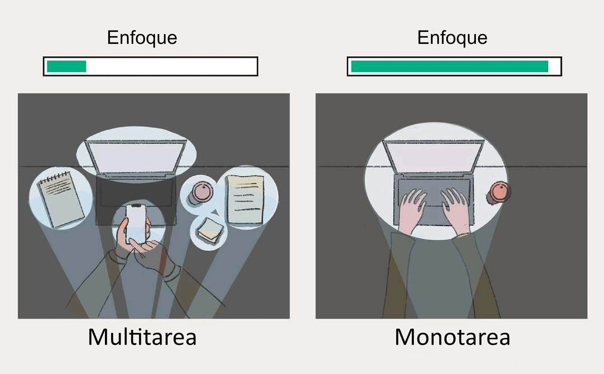
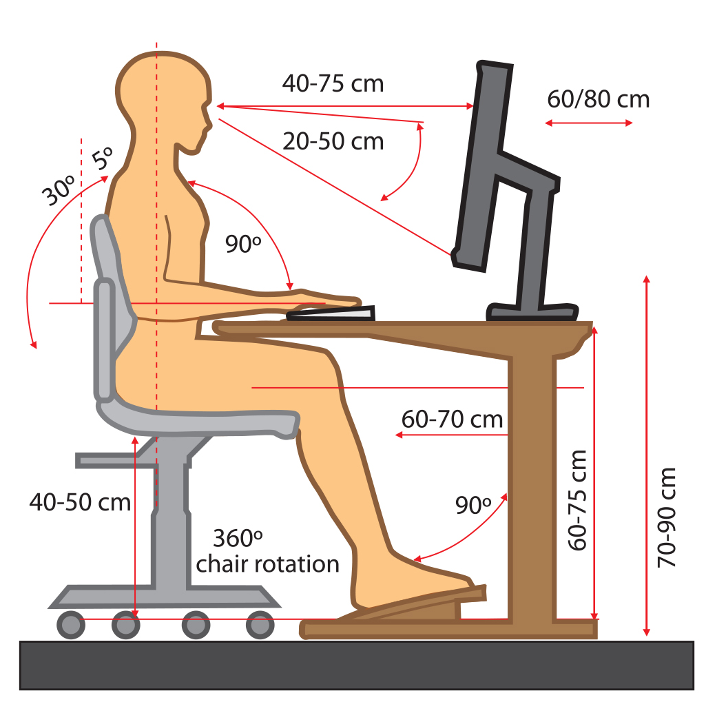
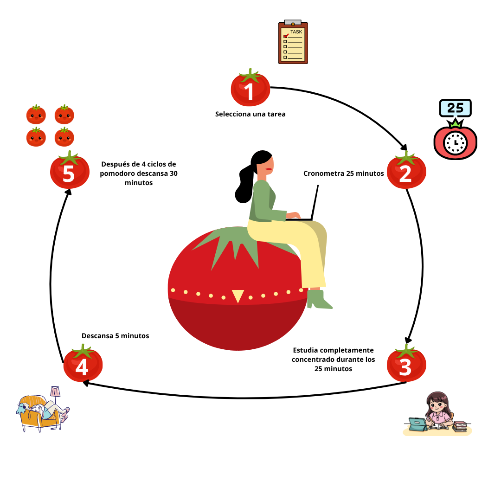
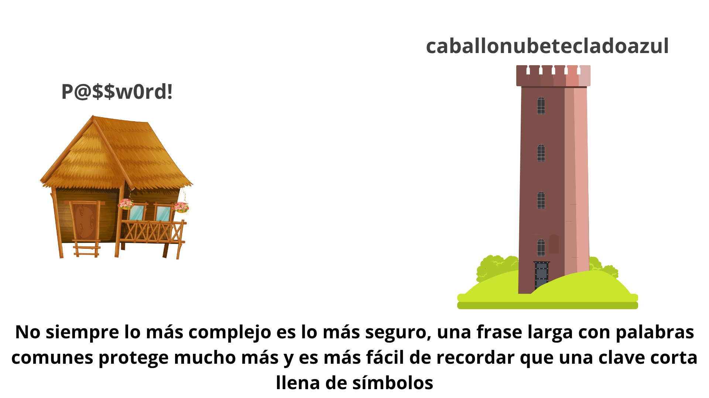
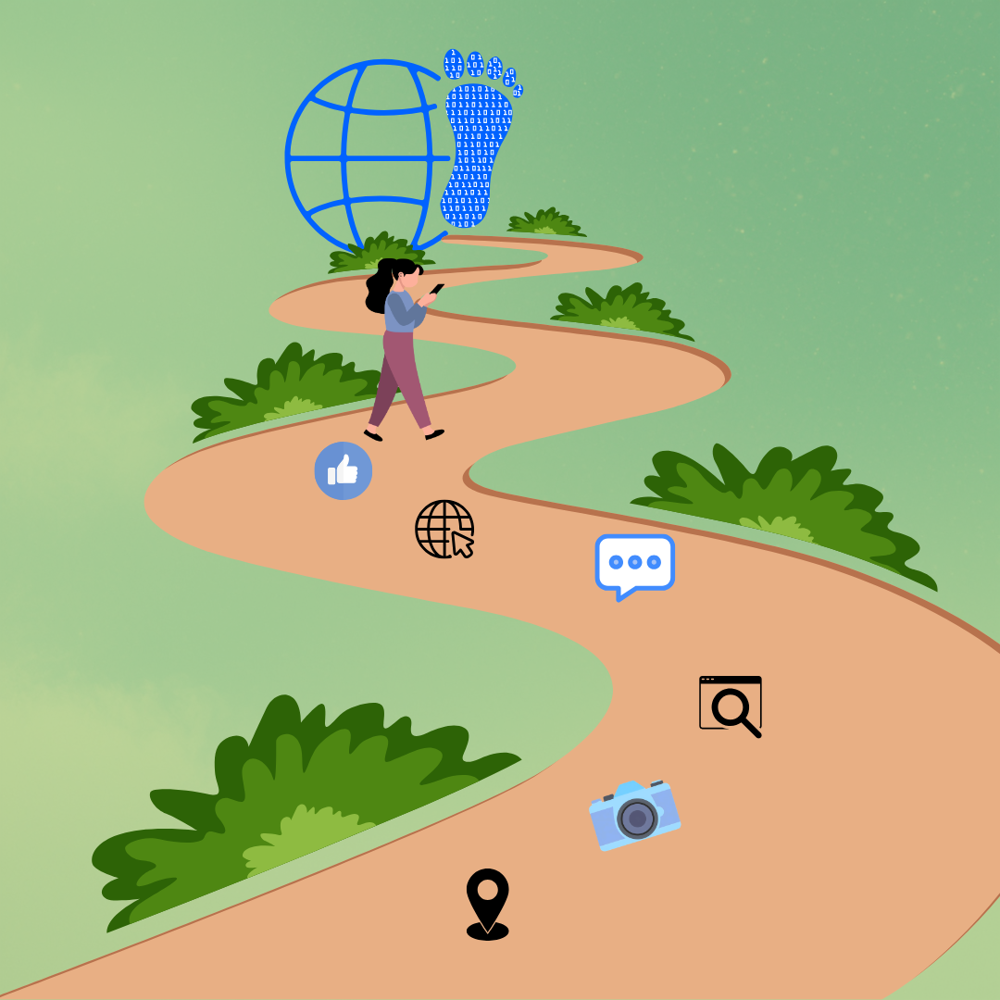
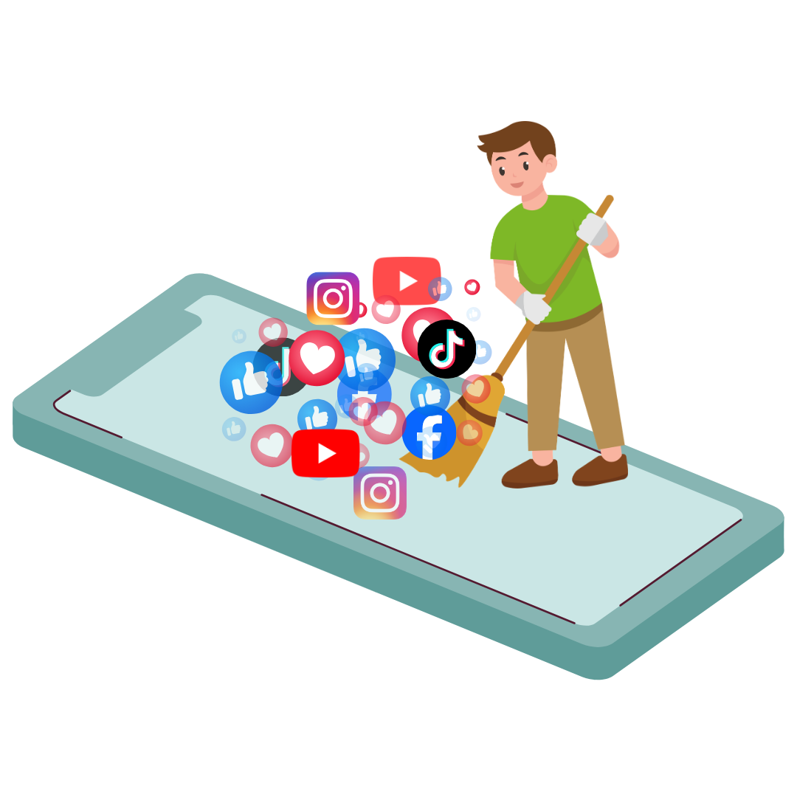
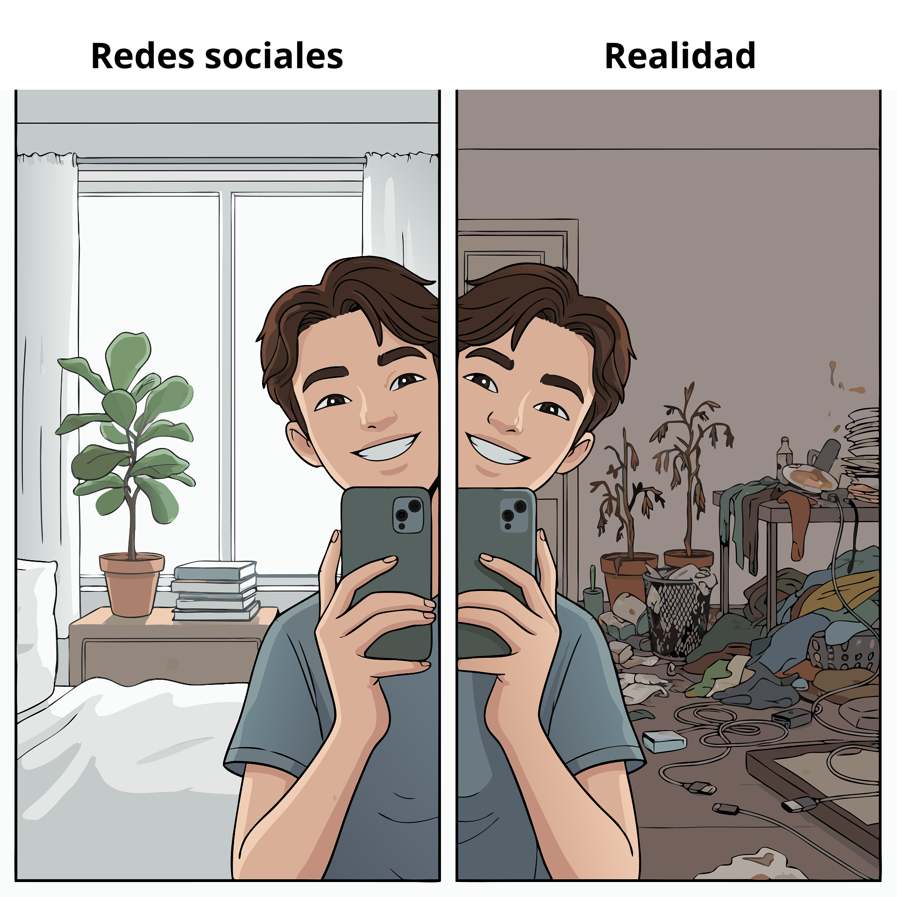
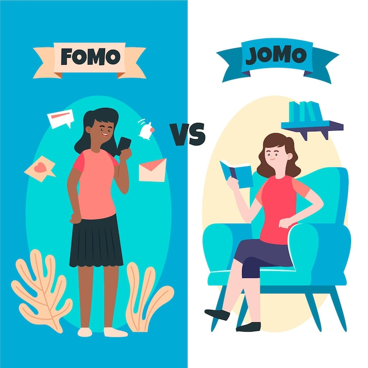

Bienestar Digital para Estudiantes Digital Wellbeing for Students
Subsección 1.1: El mito de la multitarea y la fatiga digital. Subsection 1.1: The myth of multitasking and digital fatigue.
En la era digital en busca de optimizar el tiempo los estudiantes tienden a tratar de realizar sus actividades académicas diferentes de manera simultánea y/o estudiar, interactuar con redes sociales, ver contenido multimedia, ya que sienten que están siendo más productivos o que no están desperdiciando su tiempo solamente en el entretenimiento. A este fenómeno se le ha denominado multitarea.
Fernández et al. (2026) comparte una investigación sobre prácticas de lectura de estudiantes universitarios en la que se aborda la multitarea durante la lectura y donde el 50% de los estudiantes encuestados afirmó que considera que la multitarea disminuye la eficiencia de la lectura debido a una mayor inversión de tiempo, esto es explorado a profundidad por la American Psychological Association, (2006) que le da un nombre a este fenómeno llamándolo costes de cambio esto se refiere al tiempo que tarda el cerebro a ajustarse para abordar la otra tarea, junto con la carga cognitiva de pensar en qué momento se va a cambiar de tarea lo cual disminuye la capacidad de concentración en lo que se está realizando, este coste se incremente de acuerdo a la complejidad de las tareas, en los estudios que la APA comparte para llegar a esta conclusión se evidenció que las personas que aplicaban la multitarea aumentaba el tiempo de finalización de los objetivos propuestos comparados con quienes lograban los objetivos de manera secuencial.

Imagen tomada de: Vini. (2025, April 12). Mono-tasking vs Multitasking - Why Focused Work Wins Every Time. VHTC - Transforming Education, Shaping Tomorrow. https://www.vhtc.org/2025/04/mono-tasking-vs-multitasking.html?m=1
Pero la multitarea no afecta únicamente el tiempo la productividad, sino que también tiene efectos en adversos en la capacidad cognitiva de las personas de acuerdo con Hasan (2024) las personas que practican la multitarea de manera recurrente pueden provocar hiperactividad cerebral lo cual consiste en un aumento de la actividad neuronal y los niveles de excitación, junto a padecimientos psicológicos, ya que en este tipo de pacientes se observó una mayor probabilidad de padecer síntomas de depresión y ansiedad, además, el empleo de la multitarea a largo plazo se ha visto relacionada con una menor capacidad de memoria y función ejecutiva del cerebro deficiente.
Con lo expuesto queda demostrado que la multitarea no ayuda a tener una mayor eficiencia sino que, por el contrario, aumenta el tiempo invertido en terminar las labores académicas, junto a esto provoca efectos adversos en la capacidad cognitiva de las personas que lo practican, por eso es recomendable desarrollar una sola actividad académica al tiempo enfocándose solamente en ella sin interferencia como ver videos o usar redes sociales, tomando descansos durante la actividad para estirar el cuerpo y relajar la mente antes de continuar y así evitar la sobrecarga cognitiva.
In the digital age, in search of optimizing time, students tend to try to carry out their different academic activities simultaneously and/or study, interact with social networks, and watch multimedia content, since they feel they are being more productive or that they are not just wasting their time on entertainment. This phenomenon has been termed multitasking.
Fernández et al. (2026) share research on the reading practices of university students that addresses multitasking during reading, where 50% of the surveyed students stated that they consider multitasking to decrease reading efficiency due to a greater investment of time. This is explored in depth by the American Psychological Association (2006), which gives a name to this phenomenon, calling it "switching costs." This refers to the time it takes the brain to adjust to tackle the other task, along with the cognitive load of thinking about when to switch tasks, which decreases the capacity for concentration on what is being done. This cost increases according to the complexity of the tasks. In the studies that the APA shares to reach this conclusion, it was evidenced that people who applied multitasking increased the completion time of their proposed objectives compared to those who achieved their objectives sequentially.

Image taken from: Vini. (2025, April 12). Mono-tasking vs Multitasking - Why Focused Work Wins Every Time. VHTC - Transforming Education, Shaping Tomorrow. https://www.vhtc.org/2025/04/mono-tasking-vs-multitasking.html?m=1
But multitasking does not only affect time and productivity; it also has adverse effects on people's cognitive capacity. According to Hasan (2024), people who practice multitasking recurrently can induce cerebral hyperactivity, which consists of an increase in neuronal activity and arousal levels, along with psychological conditions, as a higher probability of suffering from depression and anxiety symptoms was observed in these types of patients. Furthermore, long-term multitasking has been linked to lower memory capacity and deficient executive brain function.
With the above, it is demonstrated that multitasking does not help to have greater efficiency but, on the contrary, increases the time invested in finishing academic work. Along with this, it causes adverse effects on the cognitive capacity of the people who practice it. Therefore, it is advisable to develop a single academic activity at a time, focusing solely on it without interference such as watching videos or using social networks, taking breaks during the activity to stretch the body and relax the mind before continuing, and thus avoiding cognitive overload.
Psychological Association. (2006, 20 marzo). Multitasking: Switching costs. https://www.apa.org. https://www.apa.org/topics/research/multitasking
Fernández, R. J., Ponce, H. H., & Collantes, M. P. (2026). Perfiles de estudiantes universitarios ante la lectura digital. Un estudio referido a la multitarea o multitasking. Forma y Función, 39(1). https://doi.org/10.15446/fyf.v39n1.116075
Cuestionario de secciónQuick break?
1. La multitarea mejora la eficiencia al permitirnos completar objetivos más rápido.Multitasking improves efficiency by allowing us to complete goals faster.
2. El coste de cambio es el tiempo que tarda el cerebro en ajustarse al pasar de una tarea a otra.The "switching cost" is the time it takes the brain to adjust when switching from one task to another.
Subsección 1.2: Ergonomía y salud visual. Subsection 1.2: Ergonomics and visual health.
La utilización de los equipos de cómputo se ha vuelto una herramienta indispensable para los estudiantes, cada vez teniendo que pasar más tiempo utilizándolos, lo que ha provocado la aparición de molestias físicas como dolores al adoptar malas posturas, poca frecuencia de parpadeo y a largo plazo problemas visuales, llegan a afectar el desarrollo de actividades académicas al tener que interrumpir constantemente las sesiones de estudio por los malestares físicos que también disminuyen la capacidad de concentración provocando bajo rendimiento académico.
La American Optometric Association, 2020 establece el computer vision syndrome (CVS), que en español serie el síndrome de Visión por Computadora, esta catalogación se da debido que el uso de pantallas digitales supone un esfuerzo mayor para el enfoque y movimiento ocular, que otras tareas como la lectura o la escritura, que puede provocar síntomas como fatiga visual dolores de cabeza, visión borrosa y ojos secos, esto también se ve reflejado en la postura del individuo que al necesitar ver mejor se inclinan hacia adelante o ajusten sus cabezas en ángulos extraños causándole dolores musculares principalmente en las zonas del cuello, los hombros o la espalda.
Para abordar estas problemáticas la American Optometric Association, 2020 propone primero para aliviar la fatiga visual aplicar la regla 20-20-20 que consiste en “tómese un descanso de 20 segundos para mirar algo a 20 pies (6.1 Metros) de distancia cada 20 minuto.”, junto con visitas regulares al optómetra para evaluar la salud ocular y abordar o mitigar los problemas visuales que se puedan generar por el uso intensivo de pantallas, para mitigar los dolores musculares y mala postura recomienda la utilización de una silla ergonómica, además de tener una correcta postura al momento de sentarse como se observa en la siguiente imagen:

Imagen tomada de: American Optometric Association. (2020, 19 agosto). Computer vision syndrome (Digital eye strain). https://www.aoa.org/healthy-eyes/eye-and-vision-conditions/computer-vision-syndrome"
Finalmente, la American American Optometric Association, 2020 da las siguientes pautas al momento de utilizar los equipos de cómputo:
- Pantalla: Ubícala a una distancia de 50 a 70 cm, con el centro ligeramente por debajo del nivel de los ojos 15 a 20 grados.
- Documentos de referencia: : Colócalos alineados entre el teclado y el monitor o en caso de no ser posible utilizar un soporte lateral para evitar mover el cuello constantemente.
- Iluminación: Trabajar siempre en un ambiente bien iluminado, coloque la pantalla del ordenador de forma que evite los reflejos, especialmente los de la iluminación cenital o las ventanas. Utilice persianas o cortinas en las ventanas y sustituya las bombillas de las lámparas de escritorio por bombillas de menor potencia, en caso de ser necesario emplear filtros antirreflejo para pantallas.
- Postura: Ajusta la silla para que los pies queden planos sobre el suelo, utiliza reposabrazos y no apoyes las muñecas sobre el teclado mientras escribes.
- Descansos visuales: Aplica la regla 20-20-20, y toma un descanso de 15 minutos por cada dos horas de trabajo continuo.
- Parpadeo: Recuerda parpadear con frecuencia para evitar la sequedad ocular.
The use of computer equipment has become an indispensable tool for students, who increasingly have to spend more time using them. This has caused the appearance of physical discomfort such as pain when adopting poor postures, infrequent blinking, and, in the long term, visual problems. These come to affect the development of academic activities by having to constantly interrupt study sessions due to physical ailments that also decrease concentration capacity, causing poor academic performance.
The American Optometric Association (2020) establishes "computer vision syndrome" (CVS), which is given this classification because the use of digital screens involves a greater effort for eye focusing and movement than other tasks like reading or writing. This can cause symptoms such as eye strain, headaches, blurred vision, and dry eyes. This is also reflected in the individual's posture; needing to see better, they lean forward or adjust their heads at awkward angles, causing muscle pain primarily in the neck, shoulder, or back areas.
To address these problems, the American Optometric Association (2020) proposes, first, to alleviate eye strain by applying the 20-20-20 rule, which consists of "taking a 20-second break to look at something 20 feet (6.1 meters) away every 20 minutes," along with regular visits to the optometrist to evaluate eye health and address or mitigate visual problems that may be generated by the intensive use of screens. To mitigate muscle pain and poor posture, it recommends the use of an ergonomic chair, in addition to having correct posture when sitting, as seen in the following image:
Image taken from: American Optometric Association. (2020, 19 agosto). Computer vision syndrome (Digital eye strain). https://www.aoa.org/healthy-eyes/eye-and-vision-conditions/computer-vision-syndrome"
Finally, the American Optometric Association (2020) provides the following guidelines when using computer equipment:
- Screen: Place it at a distance of 50 to 70 cm, with the center slightly below eye level 15 to 20 degrees.
- Reference documents: Place them aligned between the keyboard and the monitor or, if not possible, use a side support to avoid constantly moving the neck.
- Lighting: Always work in a well-lit environment. Position the computer screen in a way that avoids reflections, especially from overhead lighting or windows. Use blinds or curtains on windows and replace desk lamp bulbs with lower wattage bulbs. If necessary, use anti-glare screen filters.
- Posture: Adjust the chair so that your feet are flat on the floor, use armrests, and do not rest your wrists on the keyboard while typing.
- Visual breaks: Apply the 20-20-20 rule, and take a 15-minute break for every two hours of continuous work.
- Blinking: Remember to blink frequently to prevent dry eyes.
American Optometric Association. (2020, 19 agosto). Computer vision syndrome (Digital eye strain). https://www.aoa.org/healthy-eyes/eye-and-vision-conditions/computer-vision-syndrome
Cuestionario de secciónQuick break?
1. La regla 20-20-20 consiste en descansar 20 segundos mirando a 20 pies cada 20 minutos.The 20-20-20 rule consists of resting for 20 seconds looking 20 feet away every 20 minutes.
2. La posición de la pantalla no influye en los dolores de cuello o espalda.Screen position does not influence neck or back pain.
Subsección 2.1: Economía de la atención y el "Doomscrolling". Subsection 2.1: Attention economy and "Doomscrolling".
Algo que ha afectado enormemente la capacidad de atención y gestión de tiempo de las personas en la era digital, junto con su bienestar psicologico es la necesidad constante de estar conectado a redes sociales y diversas aplicaciones, esto no siendo solo una decisión personal, sino que muchas redes sociales se crean con este propósito como bien lo explica la BBC News Mundo, 2018 las empresas tecnológicas han diseñado sus aplicaciones explotando vulnerabilidades psicológicas para monopolizar este recurso natural que es la atención, Sean Parker cofundador de Facebook reconoció que estas redes sociales buscan consumir la mayor cantidad de tiempo posible proporcionando pequeñas inyecciones de dopamina a través de interacciones sociales intermitentes, como los Me gusta o los comentarios, este ciclo de recompensa constante dificulta que las personas resistan el impulso de revisar sus dispositivos, generando hábitos compulsivos, a este fenómeno se le denomino economía de la atención.
La economía de la atención se vio potenciada exponencialmente con las aplicaciones de videos cortos que al ser un scroll infinito y que el usuario solo requiere un pequeño movimiento para seguir deslizando entre contenido que el algoritmo selecciona para él, esto creo una nueva problemática denominada Doomscrolling que es el consumir de manera continua noticias negativas, Sharma et al. (2022) lo explica de la siguiente manera: esta práctica se alimenta de la arquitectura de las plataformas, que ofrecen un desplazamiento infinito y algoritmos de recomendación que atrapan al usuario en una espiral de contenido angustiante. Aunque el doomscrolling suele iniciarse por un deseo natural de mantenerse informado y anticipar amenazas en tiempos de crisis, rápidamente se convierte en un comportamiento pasivo y problemático que deteriora la salud mental, propiciando la pérdida de la noción del tiempo y el agotamiento emocional.

Gif tomado de: Lach, R. (2021, 4 octubre). Uso de teléfonos inteligentes [Vídeo]. Pexels. https://www.pexels.com/es-es/video/manos-telefono-inteligente-sujetando-pantalla-tactil-9785305/
Como se mencionó anteriormente el algoritmo se crea para explotar las debilidades de la psique humana, y esto hace que las personas más susceptibles a sufrir de ansiedad, estrés y depresión sean también las más afectadas por el Doomscrolling, como lo demuestran las conclusiones del estudio realizado por Türk-Kurtça y Kocatürk (2024) evidencian que las personas con altos niveles de ansiedad y una elevada intolerancia a la incertidumbre son más propensas a caer en este hábito, ante la imposibilidad de aceptar lo impredecible, estos individuos buscan obsesivamente información para recuperar el control, pero el consumo constante de noticias negativas paradójicamente incrementa su ansiedad y malestar frente a este panorama, la resiliencia psicológica emerge como un factor protector fundamental la capacidad de adaptarse al estrés y regular las emociones frente a la adversidad ayuda a mitigar los efectos del Doomscrolling.
Something that has enormously affected people's attention span and time management in the digital age, along with their psychological well-being, is the constant need to be connected to social networks and various applications. This is not just a personal decision; many social networks are created with this purpose. As BBC News Mundo (2018) explains well, tech companies have designed their applications by exploiting psychological vulnerabilities to monopolize this natural resource that is attention. Sean Parker, co-founder of Facebook, acknowledged that these social networks seek to consume as much time as possible by providing small dopamine hits through intermittent social interactions, such as likes or comments. This cycle of constant reward makes it difficult for people to resist the urge to check their devices, generating compulsive habits. This phenomenon was termed the attention economy.
The attention economy was exponentially boosted with short video applications, which, being an infinite scroll where the user only requires a small movement to keep sliding through content that the algorithm selects for them, created a new problem called Doomscrolling. This is the continuous consumption of negative news. Sharma et al. (2022) explain it as follows: this practice feeds on the architecture of the platforms, which offer infinite scrolling and recommendation algorithms that trap the user in a spiral of distressing content. Although doomscrolling is often initiated by a natural desire to stay informed and anticipate threats in times of crisis, it quickly becomes a passive and problematic behavior that deteriorates mental health, leading to a loss of the sense of time and emotional exhaustion.
Gif taken from: Lach, R. (2021, 4 octubre). Uso de teléfonos inteligentes [Vídeo]. Pexels. https://www.pexels.com/es-es/video/manos-telefono-inteligente-sujetando-pantalla-tactil-9785305/
As previously mentioned, the algorithm is created to exploit the weaknesses of the human psyche, and this makes people more susceptible to suffering from anxiety, stress, and depression also the most affected by Doomscrolling. As demonstrated by the conclusions of the study conducted by Türk-Kurtça and Kocatürk (2024), people with high levels of anxiety and a high intolerance to uncertainty are more prone to fall into this habit. Faced with the inability to accept the unpredictable, these individuals obsessively seek information to regain control, but the constant consumption of negative news paradoxically increases their anxiety and discomfort. Faced with this scenario, psychological resilience emerges as a fundamental protective factor; the ability to adapt to stress and regulate emotions in the face of adversity helps mitigate the effects of Doomscrolling.
Türk-Kurtça, T., & Kocatürk, M. (2024). Beyond the Scroll: exploring how intolerance of uncertainty and psychological resilience explain the association between trait anxiety and doomscrolling. Personality and Individual Differences, 233, 112919. https://doi.org/10.1016/j.paid.2024.112919
Sharma, B., Lee, S. S., & Johnson, B. K. (2022). The dark at the end of the tunnel: Doomscrolling on social media newsfeeds. Technology Mind And Behavior, 3(1), 144-156. https://doi.org/10.1037/tmb0000059
BBC News Mundo. (2018, 13 septiembre). Qué es la «economía de la atención» y por qué tu smartphone te hace parte de ella. https://www.bbc.com/mundo/noticias-45509092
Cuestionario de secciónQuick break?
1. El Doomscrolling es el consumo pasivo y continuo de contenido negativo.Doomscrolling is the passive and continuous consumption of negative content.
2. Las redes sociales están diseñadas para ignorar las vulnerabilidades psicológicas del usuario.Social networks are designed to ignore the user's psychological vulnerabilities.
Subsección 2.2: Estrategias de enfoque (Técnica Pomodoro). Subsection 2.2: Focus Strategies (Pomodoro Technique).
Muchas veces con la finalidad de terminar rápido una actividad o estudiar se realizan sesiones maratónicas de trabajo o estudio ininterrumpido, pero esto resulta adverso ya que genera fatiga mental lo que termina provocando una menor capacidad de concentración, disminución en la retención de información, mayor probabilidad de cometer errores y fatiga mental, para prevenir esto y tener mejores resultados se hace necesario implementar técnicas de estudio o trabajo, la principal que se recomienda es la técnica pomodoro que de acuerdo a Ellett (2016) fue desarrollada por Francesco Cirillo en la década de 1980, este método consiste en dividir el trabajo en intervalos de 25 minutos de concentración intensa denominados como pomodoros, seguidos de descansos cortos de 5 minutos y al completar cuatro ciclos consecutivos se realiza un descanso más prolongado de 30 minutos.

Los beneficios de utilizar la técnica pomodoro se evidenciaron en el estudio realizado por Ogut (2025), que analizó 32 estudios con más de 5.000 participantes donde se encontró que los intervalos estructurados de trabajo y descanso contribuyen a reducir la fatiga mental, mejorar la concentración y aumentar la motivación durante las sesiones de estudio. Los resultados mostraron que los estudiantes que utilizaron ciclos tipo Pomodoro presentaron niveles de concentración superiores y mejores resultados académicos en comparación con aquellos que estudiaban sin una estructura temporal definida. Asimismo, se observó una correlación positiva entre el uso de la técnica y variables como el rendimiento académico.
Often, in order to quickly finish an activity or study, marathon sessions of uninterrupted work or study are carried out. However, this is adverse since it generates mental fatigue, which ends up causing a lower concentration capacity, a decrease in information retention, a higher probability of making mistakes, and mental exhaustion. To prevent this and achieve better results, it is necessary to implement study or work techniques. The main recommended one is the Pomodoro Technique, which according to Ellett (2016), was developed by Francesco Cirillo in the 1980s. This method consists of dividing work into 25-minute intervals of intense concentration known as pomodoros, followed by short 5-minute breaks, and upon completing four consecutive cycles, a longer break of 30 minutes is taken.

The benefits of using the Pomodoro technique were evidenced in the study conducted by Ogut (2025), which analyzed 32 studies with more than 5,000 participants. It was found that structured intervals of work and rest contribute to reducing mental fatigue, improving concentration, and increasing motivation during study sessions. The results showed that students who used Pomodoro-type cycles presented higher levels of concentration and better academic results compared to those who studied without a defined temporal structure. Likewise, a positive correlation was observed between the use of the technique and variables such as academic performance.
Ogut, E. (2025). Assessing the efficacy of the Pomodoro technique in enhancing anatomy lesson retention during study sessions: a scoping review. BMC Medical Education, 25(1), 1440. https://doi.org/10.1186/s12909-025-08001-0
Ellett, G. (2016, 14 diciembre). The Pomodoro Technique: Study More Efficiently, Take More Breaks. Learning Commons. https://learningcommons.ubc.ca/the-pomodoro-technique-study-more-efficiently-take-more-breaks/
Cuestionario de secciónQuick break?
1. Un Pomodoro consiste en trabajar 25 minutos de forma intensa.A Pomodoro consists of working 25 minutes intensely.
2. La técnica Pomodoro recomienda no realizar descansos largos nunca.The Pomodoro technique recommends never taking long breaks.
Subsección 3.1: Contraseñas. Subsection 3.1: Passwords.
En la actualidad las personas manejan decenas de cuentas digitales como lo son plataformas universitarias, correos electrónicos, redes sociales y servicios financieros, muchas veces se cree que una contraseña segura debe contener una mezcla de mayúsculas, minúsculas, números y símbolos por ejemplo P@$$w0rd!, sin embargo la evidencia actual en ciberseguridad demuestra que este enfoque suele generar contraseñas difíciles de recordar para el usuario, pero relativamente fáciles de descifrar para los algoritmos modernos mediante ataques de fuerza bruta o diccionarios.
De acuerdo con la publicación de Grassi et al. (2017), la entropía de una contraseña que se refiere a su imprevisibilidad y resistencia matemática al descifrado aumenta de manera drástica con su longitud que con su complejidad tipográfica, una contraseña de 16 a 20 caracteres formada por palabras comunes al azar como caballonubetecladoazul tomaría siglos en ser descifrada por una supercomputadora, mientras que una contraseña compleja de 8 caracteres puede ser vulnerada en cuestión de horas o días.

Además, la Cyber Security Agency of Singapore, 2025 advierte que el mayor riesgo no es solo la debilidad de la clave sino su reutilización, si una plataforma es vulnerada los atacantes probarán esas mismas credenciales en otros, por lo cual propone la siguiente información sobre higiene de contraseñas:
- Utiliza contraseñas diferentes para tus cuentas en línea.
- No compartas tus contraseñas con nadie ni las anotes.
- No inicies sesión en servicios en línea a través de redes Wi-Fi no seguras.
- No proporcione sus contraseñas ni códigos OTP en respuesta a una llamada telefónica, correo electrónico o sitio web sospechoso, ya que podría tratarse de una estafa de phishing.
- Habilitar la autenticación de dos factores
Nowadays people manage dozens of digital accounts such as university platforms, emails, social networks and financial services, it is often believed that a secure password must contain a mix of uppercase letters, lowercase letters, numbers and symbols for example P@$$w0rd!, however current evidence in cybersecurity shows that this approach usually generates passwords that are difficult to remember for the user, but relatively easy to crack for modern algorithms through brute force or dictionary attacks.
According to the publication by Grassi et al. (2017), the entropy of a password which refers to its unpredictability and mathematical resistance to decryption increases drastically with its length rather than with its typographical complexity a 16 to 20 character password formed by random common words like horsecloudkeyboardblue would take centuries to be cracked by a supercomputer, while a complex 8-character password can be compromised in a matter of hours or days.

Furthermore, the Cyber Security Agency of Singapore, 2025 warns that the greatest risk is not only the weakness of the password but its reuse, if a platform is breached attackers will try those same credentials on others, for which it proposes the following information on password hygiene:
- Use different passwords for your online accounts.
- Do not share your passwords with anyone nor write them down.
- Do not log into online services through unsecured Wi-Fi networks.
- Do not provide your passwords or OTP codes in response to a phone call, email or suspicious website, since it could be a phishing scam.
- Enable two-factor authentication
Cyber Security Agency of Singapore. (2025, 21 enero). Use strong passwords and enable 2FA. Cyber Security Agency Of Singapore. https://www.csa.gov.sg/our-programmes/cybersecurity-outreach/cybersecurity-campaigns/better-cyber-safe-than-sorry-campaign/use-strong-passwords-and-enable-2fa/
Grassi, P. A., Fenton, J. L., Newton, E. M., Perlner, R. A., Regenscheid, A. R., Burr, W. E., Richer, J. P., Lefkovitz, N. B., Danker, J. M., Choong, Y., Greene, K. K., & Theofanos, M. F. (2017). Digital identity guidelines: authentication and lifecycle management. https://doi.org/10.6028/nist.sp.800-63b
Cuestionario de secciónQuick break?
1. Una contraseña de 16 caracteres formada por palabras al azar es más segura que una compleja de 8 caracteres.A 16-character password made of random words is more secure than a complex 8-character one.
2. La reutilización de contraseñas en diferentes sitios no aumenta el riesgo de seguridad.Reusing passwords across different sites does not increase security risk.
Subsección 3.2: Identificación de Phishing. Subsection 3.2: Phishing Identification.
En el entorno digital la mayoría de ciberataques no dependen de vulnerar sistemas informáticos complejos, sino de engañar a la persona mediante técnicas de ingeniería social, en esto destaca el phishing, en este ataque, el ciberdelincuente se hace pasar por una entidad de confianza como la universidad, un banco, o un servicio de mensajería para manipular al usuario y lograr que revele información personal, descargue programas maliciosos o realice transferencias económicas.
Para lograr su objetivo, los atacantes rara vez apelan a la lógica. De acuerdo con el Instituto Nacional de Ciberseguridad de España, 2021, la principal táctica del phishing es generar una falsa sensación de urgencia o amenaza, utilizando mensajes con asuntos como tu cuenta será suspendida, multa pendiente de pago o reclama tu beca hoy mismo, están diseñados para provocar miedo o un entusiasmo repentino, esta presión psicológica busca que la víctima tome medidas rápidas y precipitadas, saltándose el pensamiento crítico y cualquier medida de precaución.
Para no caer en estas trampas y proteger la identidad digital es fundamental desarrollar un escepticismo saludable y aplicar de manera sistemática las siguientes pautas dadas por el Instituto Nacional de Ciberseguridad de España, 2017:
- El remitente real: Los atacantes utilizan técnicas de email spoofing para falsear el nombre visible, por eso es indispensable revisar el correo desde donde se envía para corroborar su legitimad porque las instituciones legítimas utilizan sus propios dominios corporativos como por ejemplo @unad.edu.co, por lo que un envío desde dominios gratuitos como @gmail.com o dominios con nombres extraños o mal escritos son una señal clara de fraude.
- Verificar los enlaces sin hacer clic: Antes de presionar cualquier botón, se debe situar el cursor del ratón por encima del enlace para previsualizar la URL en la pantalla, si el texto indica ir al banco o a un portal académico, pero el enlace dirige a una dirección web extraña o no oficial es un engaño.
- ¿A quién va dirigido el correo?: Los envíos masivos de phishing a menudo no disponen del nombre de la víctima, por lo cual se dirigen con mensajes genéricos como estimado cliente u hola estudiante, combinadas en ocasiones con errores ortográficos o traducciones deficientes, son indicadores de alerta.
- Ignorar solicitudes directas de credenciales: Ninguna entidad legítima, ya sea pública o privada solicita contraseñas, pines o datos bancarios confidenciales pidiendo que respondas a un correo electrónico, a un mensaje o en una llamada.
In the digital environment most cyberattacks do not depend on breaching complex computer systems, but rather on deceiving the person through social engineering techniques, in this phishing stands out, in this attack, the cybercriminal poses as a trusted entity such as the university, a bank, or a messaging service to manipulate the user and get them to reveal personal information, download malicious programs or make financial transfers.
To achieve their goal, attackers rarely appeal to logic. According to the National Cybersecurity Institute of Spain, 2021, the main phishing tactic is to generate a false sense of urgency or threat, using messages with subjects like your account will be suspended, pending fine payment or claim your scholarship today, they are designed to provoke fear or sudden enthusiasm, this psychological pressure seeks to make the victim take quick and hasty actions, bypassing critical thinking and any precautionary measures.
To avoid falling into these traps and protect digital identity it is essential to develop a healthy skepticism and systematically apply the following guidelines given by the National Cybersecurity Institute of Spain, 2017:
- The real sender: Attackers use email spoofing techniques to fake the visible name, therefore it is essential to check the email from which it is sent to corroborate its legitimacy because legitimate institutions use their own corporate domains such as @unad.edu.co, so an email from free domains like @gmail.com or domains with strange or misspelled names are a clear sign of fraud.
- Verify links without clicking: Before pressing any button, the mouse cursor should be hovered over the link to preview the URL on the screen, if the text indicates going to the bank or an academic portal, but the link directs to a strange or unofficial web address it is a scam.
- Who is the email addressed to?: Mass phishing emails often do not have the victim's name, which is why they address them with generic messages like dear customer or hello student, sometimes combined with spelling mistakes or poor translations, they are warning indicators.
- Ignore direct requests for credentials: No legitimate entity, whether public or private requests passwords, PINs or confidential bank details asking you to reply to an email, a message or on a call.
Instituto Nacional de Ciberseguridad de España. (2017, 16 diciembre). Conoce a fondo qué es el phishing | INCIBE | INCIBE. incibe.es. https://www.incibe.es/incibe/protegete-conoce-a-fondo-phishing
Instituto Nacional de Ciberseguridad de España. (2021, 19 enero). TemáTICas Phishing | Empresas | INCIBE. incibe.es. https://www.incibe.es/empresas/tematicas/phishing
Cuestionario de secciónQuick break?
1. Si un correo electrónico tiene errores ortográficos o traducciones deficientes, puede ser una alerta de Phishing.If an email has spelling errors or poor translations, it could be a Phishing alert.
2. Las entidades legítimas suelen solicitar contraseñas respondiendo a un correo electrónico.Legitimate entities often request passwords by replying to an email.
Subsección 4.1: Huella digital. Subsection 4.1: Digital footprint.
Con los equipos inteligentes cada vez más ligados a la vida cotidiana da como resultado que cada vez que interactuamos con el entorno virtual o el físico a trevés de la tecnología dejamos un rastro de información, de acuerdo a García. (2021) este cúmulo de datos conforma nuestra huella digital, la cual representa actualmente uno de los mayores desafíos para la protección de la privacidad individual y colectiva, en este sentido Puebla. (2018) explica que esta huella es una valiosa materia prima para analizar el comportamiento humano y se produce fundamentalmente por dos vías de forma pasiva producida de forma automática por los equipos utilizados y de forma activa generada conscientemente por los usuarios.
Aunque la huella pasiva ocurre de manera rutinaria y a menudo de manera inconsciente al emplear cualquier equipo tecnológico en tareas sencillas, como la navegación web, las compras, los sensores del dispositivo, entre muchas otras herramientas que recopilan información, es en la huella activa donde el usuario tiene un rol protagónico y una responsabilidad directa Puebla. (2018) señala que con la consolidación de las redes sociales las personas dejaron de ser meros receptores de información para convertirse en generadores de contenido esta huella activa engloba los inmensos volúmenes de datos explícitos que creamos al participar en redes sociales, publicar fotografías, emitir opiniones en foros, enviar correos electrónicos y dar likes a diversas publicaciones.
El verdadero desafío de la huella activa radica en la falta de consciencia sobre sus implicaciones a largo plazo en la actual era del big data Puebla. (2018) destaca que los datos masivos son considerados el petróleo de la economía del siglo XXI, lo que impulsa a las grandes compañías tecnológicas a recopilar nuestra información voluntaria para elaborar perfiles sociológicos y psicológicos altamente detallados, a pesar de esto, García (2021) alerta que gran parte de la población presiona el botón de aceptar en los términos y condiciones sin siquiera saber que está aceptando, y termina compartiendo detalles de su vida personal con una preocupante falta de precaución al entregar voluntariamente esta información, los usuarios se exponen a riesgos significativos, facilitando vías para la vigilancia comercial, la manipulación ideológica y la posible violación de sus libertades fundamentales.

With smart devices increasingly linked to daily life, it results in the fact that every time we interact with the virtual or physical environment through technology we leave a trail of information, according to García. (2021) this accumulation of data makes up our digital footprint, which currently represents one of the greatest challenges for the protection of individual and collective privacy, in this sense Puebla. (2018) explains that this footprint is a valuable raw material to analyze human behavior and is fundamentally produced in two ways passively produced automatically by the equipment used and actively generated consciously by the users.
Although the passive footprint occurs routinely and often unconsciously when using any technological equipment in simple tasks, such as web browsing, shopping, device sensors, among many other tools that collect information, it is in the active footprint where the user has a leading role and a direct responsibility Puebla. (2018) points out that with the consolidation of social networks, people stopped being mere receivers of information to become content generators this active footprint encompasses the immense volumes of explicit data we create when participating in social networks, posting photographs, expressing opinions in forums, sending emails and giving likes to various publications.
The real challenge of the active footprint lies in the lack of awareness about its long-term implications in the current big data era, Puebla. (2018) highlights that massive data is considered the oil of the 21st-century economy, which drives large technological companies to collect our voluntary information to elaborate highly detailed sociological and psychological profiles, despite this, García (2021) warns that a large part of the population presses the accept button in the terms and conditions without even knowing what they are accepting, and ends up sharing details of their personal life with a worrying lack of precaution by voluntarily handing over this information, users expose themselves to significant risks, facilitating ways for commercial surveillance, ideological manipulation and the possible violation of their fundamental freedoms.
Garcia, E. Q. (2021). La huella digital y la protección de datos: su impacto en las culturas de alto contexto y alto control de incertidumbre en Latinoamérica. InterSedes, 169-187. https://doi.org/10.15517/isucr.v22i46.46254
Puebla, J. G. (2018). Big Data y nuevas geografías: la huella digital de las actividades humanas. Documents D Anàlisi Geogràfica, 64(2), 195-217. https://doi.org/10.5565/rev/dag.526
Cuestionario de secciónQuick break?
1. La huella digital pasiva se genera automáticamente por los equipos que usamos.The passive digital footprint is generated automatically by the devices we use.
2. Solo la huella digital activa tiene riesgos de privacidad.Only the active digital footprint has privacy risks.
Subsección 4.2: Auditoría de tu presencia profesional. Subsection 4.2: Audit of your professional presence.
La construcción de una identidad digital no es un proceso que termine al cerrar una sesión o al eliminar una aplicación, por el contrario, los datos que publicamos en la red permanecen a lo largo del tiempo, García. (2021) advierte que la huella digital constituye un registro imborrable que influye en la reputación, en el ámbito social y laboral de una persona, esto resulta relevante porque cada día las instituciones ven la necesidad de analizar la presencia en redes de sus futuros trabajadores para así evitar escándalos y mala publicidad, por lo cual realizar una revisión de nuestra presencia web y ser más conscientes del impacto de lo que publicamos se ha convertido en una acción preventiva indispensable para proteger el futuro profesional.
Para evitar que este historial se convierta en un obstáculo o en una posible fuga de información personal se deben realizar una revisión de su presencia en la red, integrando las siguientes medidas encontradas en los textos de Marriott-Smith (2026) y García. (2021):
- Búsqueda personal en navegadores: Marriott-Smith (2026) aconseja iniciar buscando el propio nombre en múltiples motores de búsqueda añadiendo detalles como la universidad o residencia para descubrir qué información pública existe sobre nosotros.
- Gestión de redes y eliminación de cuentas: Es fundamental rastrear y borrar permanentemente perfiles antiguos inactivos, para las redes sociales de uso personal Marriott-Smith (2026) sugiere configurarlas como privadas y desetiquetarse de publicaciones inapropiadas subidas por terceros.
- Ejercicio de los derechos digitales: A nivel estructural y legal García. (2021) enfatiza que los ciudadanos deben ejercer herramientas como el derecho al olvido, exigiendo a los motores de búsqueda la eliminación de datos obsoletos o inexactos que atenten contra su privacidad y reputación.
- Actualización estratégica: Marriott-Smith (2026) resalta la importancia de mantener actualizados los perfiles estrictamente profesionales y portafolios, asegurando que demuestren las habilidades más recientes y refuercen la candidatura, asegurando que esa sea nuestra cara visible ante el mundo.

The construction of a digital identity is not a process that ends when logging out or deleting an application, on the contrary, the data we publish on the net remains over time, García. (2021) warns that the digital footprint constitutes an indelible record that influences the reputation, in the social and labor environment of a person, this is relevant because every day institutions see the need to analyze the social media presence of their future workers in order to avoid scandals and bad publicity, which is why conducting a review of our web presence and being more aware of the impact of what we publish has become an indispensable preventive action to protect the professional future.
To prevent this history from becoming an obstacle or a possible leak of personal information, a review of your online presence must be carried out, integrating the following measures found in the texts by Marriott-Smith (2026) and García. (2021):
- Personal browser search: Marriott-Smith (2026) advises to start by searching one's own name in multiple search engines adding details such as the university or residence to discover what public information exists about us.
- Network management and account deletion: It is essential to track down and permanently delete old inactive profiles, for personal social networks Marriott-Smith (2026) suggests configuring them as private and untagging oneself from inappropriate posts uploaded by third parties.
- Exercise of digital rights: At a structural and legal level García. (2021) emphasizes that citizens must exercise tools such as the right to be forgotten, demanding that search engines remove obsolete or inaccurate data that threatens their privacy and reputation.
- Strategic update: Marriott-Smith (2026) highlights the importance of keeping strictly professional profiles and portfolios updated, ensuring they demonstrate the latest skills and reinforce the candidacy, ensuring that this is our visible face to the world.
Garcia, E. Q. (2021). La huella digital y la protección de datos: su impacto en las culturas de alto contexto y alto control de incertidumbre en Latinoamérica. InterSedes, 169-187. https://doi.org/10.15517/isucr.v22i46.46254
Marriott-Smith, M. (2026, 4 febrero). Why you should check your digital footprint before job searching. Unitemps. https://www.unitemps.com/career-advice/why-you-should-check-your-digital-footprint-before-job-searching/
Cuestionario de secciónQuick break?
1. Es recomendable buscar tu propio nombre en buscadores para ver qué información pública existe.It is advisable to search for your own name in search engines to see what public information exists.
2. El derecho al olvido no permite pedir la eliminación de datos obsoletos en buscadores.The right to be forgotten does not allow requesting the removal of obsolete data in search engines.
Subsección 5.1: El FOMO y la ansiedad comparativa. Subsection 5.1: FOMO and comparative anxiety.
En el entorno hiperconectado actual, el bienestar emocional se ve frecuentemente desafiado por fenómenos psicológicos que se han producido por el uso constante de las redes sociales el más relevante de ellos es el Fear Of Missing Out abreviado como FOMO que en español se traduciría como miedo a perderse algo, Przybylski et al. (2013) explica que es una aprensión generalizada de que otros podrían estar teniendo experiencias gratificantes de las cuales uno está ausente, esta sensación se traduce en un deseo compulsivo de mantenerse continuamente conectado a las actividades de la red, según este estudio la ansiedad de desconexión no es un simple problema de gestión del tiempo, sino la frustración de una profunda necesidad psicológica de pertenencia social que los entornos digitales explotan y monetizan.
Otro fenómeno generado a raíz de las redes sociales que es menos conocido, pero más perjudicial es la ansiedad comparativa esto se debe a que las personas rara vez documentan su cotidianidad rutinaria o sus fracasos, en su lugar publican sus mejores momentos o versiones editadas de sus vidas, Vogel et al. (2014) explican que la exposición constante a estos perfiles altamente idealizados provoca que los usuarios realicen una comparación social al medir sus propias vidas llenas de altibajos y vulnerabilidades contra las aparentes vidas perfectas de las otras personas muestran en sus redes, por lo cual experimentan una reducción significativa en su autoestima, generando sentimientos de insuficiencia, soledad y ansiedad crónica.

Imagen tomada de: Evilfavoriteart. (2025, September 10). Download Digital Life, Social Media, online vs reality. Royalty-Free Vector Graphic. Pixabay. https://pixabay.com/vectors/digital-life-social-media-9818472/
Comprender estos fenómenos puede ayudar a disminuir su efecto en la vida cotidiana, lo fundamental es entender que las redes sociales son entretenimiento y espacios susceptibles a la manipulación ya que solo tenemos acceso a lo que esa persona publica por lo cual miramos una versión idealizada de sus vidas y no un reflejo fiel de su cotidianidad, como afrontar el FOMO se explorara en la siguiente sección.
In the current hyperconnected environment, emotional well-being is frequently challenged by psychological phenomena that have been produced by the constant use of social networks the most relevant of them is the Fear Of Missing Out abbreviated as FOMO which in Spanish would translate as miedo a perderse algo, Przybylski et al. (2013) explains that it is a pervasive apprehension that others might be having rewarding experiences from which one is absent, this feeling translates into a compulsive desire to stay continually connected to network activities, according to this study the anxiety of disconnection is not a simple time management problem, but the frustration of a deep psychological need for social belonging that digital environments exploit and monetize.
Another phenomenon generated as a result of social networks that is less known, but more harmful is comparative anxiety this is due to the fact that people rarely document their routine daily lives or their failures instead they publish their best moments or edited versions of their lives, Vogel et al. (2014) explain that constant exposure to these highly idealized profiles causes users to make a social comparison when measuring their own lives full of ups and downs and vulnerabilities against the apparent perfect lives other people show on their networks, for which they experience a significant reduction in their self-esteem, generating feelings of inadequacy, loneliness and chronic anxiety.
Image taken from: Evilfavoriteart. (2025, September 10). Download Digital Life, Social Media, online vs reality. Royalty-Free Vector Graphic. Pixabay. https://pixabay.com/vectors/digital-life-social-media-9818472/
Understanding these phenomena can help reduce their effect in daily life, the fundamental thing is to understand that social networks are entertainment and spaces susceptible to manipulation since we only have access to what that person publishes for which we look at an idealized version of their lives and not a faithful reflection of their daily lives, how to deal with FOMO will be explored in the next section.
Przybylski, A. K., Murayama, K., DeHaan, C. R., & Gladwell, V. (2013). Motivational, emotional, and behavioral correlates of fear of missing out. Computers In Human Behavior, 29(4), 1841-1848. https://doi.org/10.1016/j.chb.2013.02.014
Vogel, E. A., Rose, J. P., Roberts, L. R., & Eckles, K. (2014). Social comparison, social media, and self-esteem. Psychology Of Popular Media Culture, 3(4), 206-222. https://doi.org/10.1037/ppm0000047
Cuestionario de secciónQuick break?
1. El FOMO es un miedo a perderse experiencias gratificantes de las cuales uno está ausente.FOMO is a fear of missing out on rewarding experiences from which one is absent.
2. Las redes sociales reflejan fielmente la cotidianidad rutinaria de las personas.Social networks faithfully reflect people's routine daily lives.
Subsección 5.2: Establecimiento de límites (JOMO). Subsection 5.2: Setting boundaries (JOMO).
Frente a la constante presión de la conectividad perpetua y los efectos negativos del FOMO las investigaciones psicológicas ha comenzado a explorar un paradigma alternativo enfocado en el bienestar proponiendo el Joy of Missing Out abreviado como JOMO o la alegría de perderse algo en español, de acuerdo con un estudio realizado por Barry et al. (2023) el JOMO se conceptualiza como el disfrute y la satisfacción que se experimenta durante los períodos de desconexión de los demás o de las exigencias sociales, a diferencia del aislamiento no deseado o la evasión impulsada por la ansiedad social, el JOMO genuino está fundamentado en la teoría de la autodeterminación esto significa que los beneficios psicológicos surgen cuando el individuo tiene la libertad y la autonomía para elegir desconectarse de la interacción virtual.
Los resultados obtenidos por Barry et al., 2023 demuestran que cultivar el JOMO está asociado positivamente con mayores niveles de atención plena y satisfacción con la vida, cuando las personas disfrutan de estar desconectadas, no lo ven como una restricción sino como una oportunidad valiosa para centrarse en su entorno inmediato, descansar mentalmente y dedicar tiempo a la autorreflexión y a la inspiración creativa independiente.

Imagen tomada de: Freepik. (s. f.). Fomo vs jomo | Vector gratuito. Magnific. https://www.magnific.com/es/vector-gratis/fomo-vs-jomo_9884685.htm#fromView=search&page=1&position=5&uuid=a809e159-6878-4431-9b1d-e68572fd4870&query=fomo+vs+jomo
Adoptar el JOMO en un mundo que nos impulsa a estar constantemente conectados puede representar un desafío. Sin embargo, Sanz (2025) propone una serie de estrategias sencillas para incorporar este concepto en la vida diaria y establecer límites digitales efectivos:
- Desconecta las notificaciones: Uno de los primeros pasos para reducir el FOMO es desactivar las notificaciones de redes sociales o aplicaciones que generan ansiedad.
- Programa tiempo sin pantallas: Establece momentos en el día para estar completamente desconectado de dispositivos, como durante las comidas o antes de dormir.
- Practica la gratitud: En lugar de enfocarte en lo que te estás perdiendo, toma un momento cada día para reflexionar sobre lo que tienes y lo que has disfrutado.
- Di no con libertad: Aprende a rechazar invitaciones o compromisos sin sentir culpa, elige actividades que realmente te aporten alegría y bienestar.
- Haz actividades sin redes sociales: Disfruta de momentos sin documentarlos en redes sociales. Sal a caminar, lee un libro, o disfruta de una conversación sin pensar en cómo se verá en línea.
- Sé selectivo con el contenido que consumes: Reduce el tiempo que pasas en redes sociales y elige conscientemente qué cuentas seguir, priorizando aquellas que te inspiren y aporten valor positivo.
Faced with the constant pressure of perpetual connectivity and the negative effects of FOMO psychological research has begun to explore an alternative paradigm focused on well-being proposing the Joy of Missing Out abbreviated as JOMO or la alegría de perderse algo in Spanish, according to a study conducted by Barry et al. (2023) JOMO is conceptualized as the enjoyment and satisfaction experienced during periods of disconnection from others or from social demands, unlike unwanted isolation or avoidance driven by social anxiety, genuine JOMO is based on self-determination theory this means that psychological benefits arise when the individual has the freedom and autonomy to choose to disconnect from virtual interaction.
The results obtained by Barry et al., 2023 show that cultivating JOMO is positively associated with higher levels of mindfulness and life satisfaction, when people enjoy being disconnected, they do not see it as a restriction but as a valuable opportunity to focus on their immediate environment, rest mentally and dedicate time to self-reflection and independent creative inspiration.
Image taken from: Freepik. (n. d.). Fomo vs jomo | Vector gratuito. Magnific. https://www.magnific.com/es/vector-gratis/fomo-vs-jomo_9884685.htm#fromView=search&page=1&position=5&uuid=a809e159-6878-4431-9b1d-e68572fd4870&query=fomo+vs+jomo
Adopting JOMO in a world that pushes us to be constantly connected can represent a challenge. However, Sanz (2025) proposes a series of simple strategies to incorporate this concept into daily life and establish effective digital boundaries:
- Disconnect notifications: One of the first steps to reduce FOMO is to deactivate notifications from social networks or applications that generate anxiety.
- Schedule screen-free time: Establish moments in the day to be completely disconnected from devices, such as during meals or before sleeping.
- Practice gratitude: Instead of focusing on what you are missing out on, take a moment every day to reflect on what you have and what you have enjoyed.
- Say no freely: Learn to decline invitations or commitments without feeling guilty, choose activities that truly bring you joy and well-being.
- Do activities without social networks: Enjoy moments without documenting them on social networks. Go for a walk, read a book, or enjoy a conversation without thinking about how it will look online.
- Be selective with the content you consume: Reduce the time you spend on social networks and consciously choose which accounts to follow, prioritizing those that inspire you and provide positive value.
Barry, C. T., Smith, E. E., Murphy, M. B., Halter, B. M., & Briggs, J. (2023). JOMO: Joy of missing out and its association with social media use, self-perception, and mental health. Telematics and Informatics Reports, 10, 100054. https://doi.org/10.1016/j.teler.2023.100054
Sanz, S. (2025, 31 marzo). SUPERANDO EL FOMO: CÓMO HALLAR SATISFACCIÓN EN EL JOMO. Psytel Psicólogos Especialistas. https://psytel.es/superando-el-fomo-como-hallar-satisfaccion-en-el-jomo/
Cuestionario de secciónQuick break?
1. El JOMO se basa en la autonomía para elegir cuándo desconectarse de la interacción virtual.JOMO is based on the autonomy to choose when to disconnect from virtual interaction.
2. Desactivar las notificaciones es una estrategia que aumenta la ansiedad digital.Disabling notifications is a strategy that increases digital anxiety.
📝 Evaluación Final 📝 Final Assessment
¡Has completado todos los módulos! Pon a prueba tus conocimientos. Responde estas 10 preguntas (una por cada subsección) para ver tu calificación final.
You have completed all modules! Test your knowledge. Answer these 10 questions (one for each subsection) to see your final score.